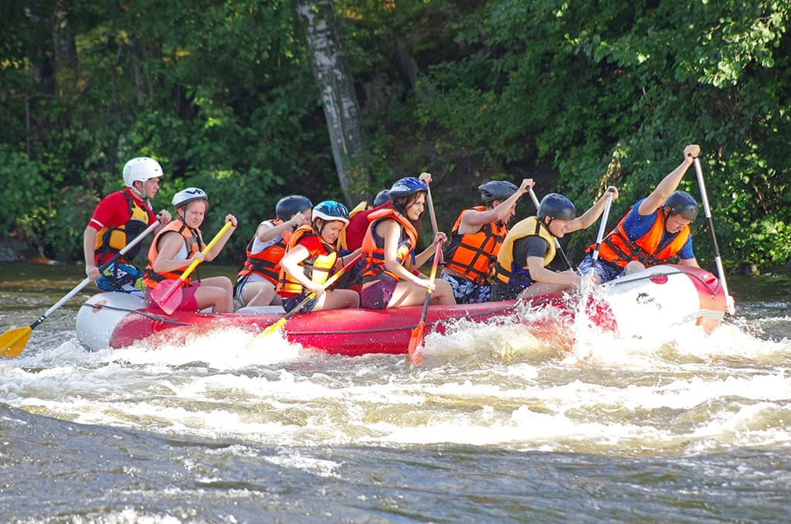
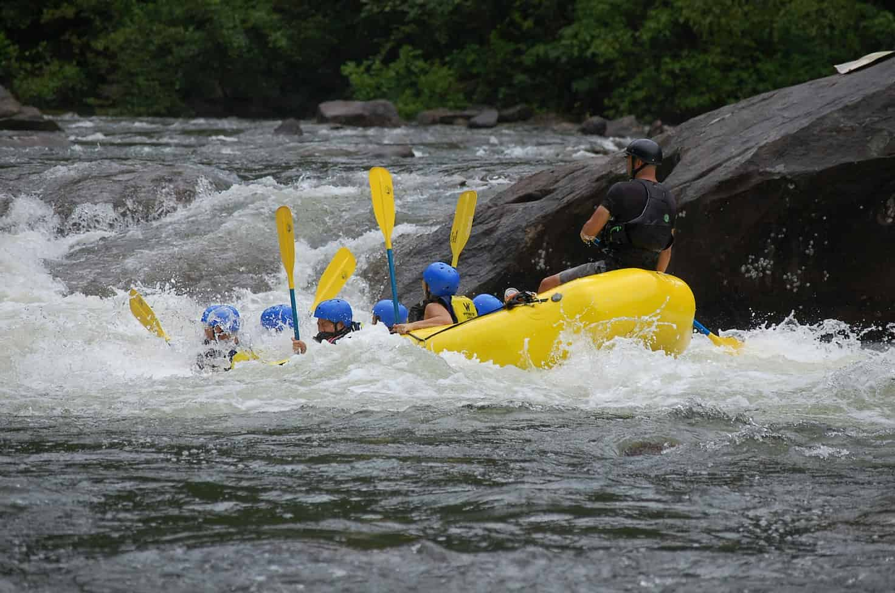

Hayatu Rafting Site

Our Purpose: To connect adventurers with the raw power and beauty of the river through unforgettable whitewater experiences.
Our Mission: To deliver safe, thrilling, and eco-conscious rafting expeditions led by expert guides who treat every guest like family.
Our Creed: We respect the water, trust our crew, paddle as one, and leave every riverbank cleaner than we found it.
Our Motto: "Ride the Rapids, Respect the River."
History
Founded by a small group of passionate river guides, Hayatu Rafting began with two inflatable rafts, a handful of paddles,
and a deep love for the Nile's thrilling rapids. What started as weekend excursions for local thrill-seekers quickly grew
into a premier whitewater adventure outfitter known for safety, hospitality, and environmental stewardship.

Over the years, we have expanded our fleet and trained a dedicated team of certified river guides, welcoming thousands of
paddlers from around the world to experience the rush of the river firsthand.